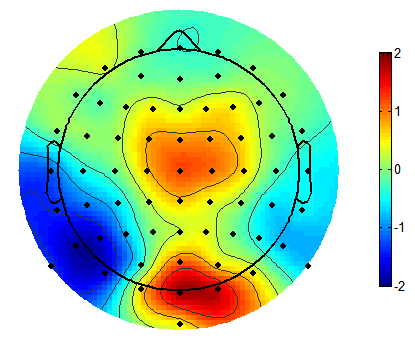
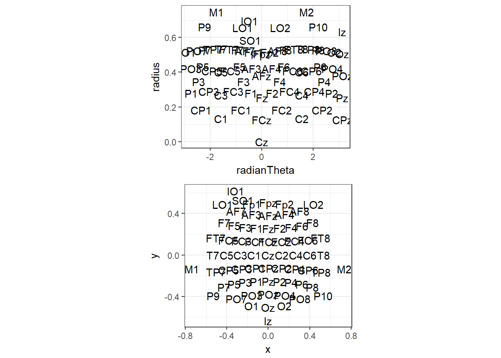
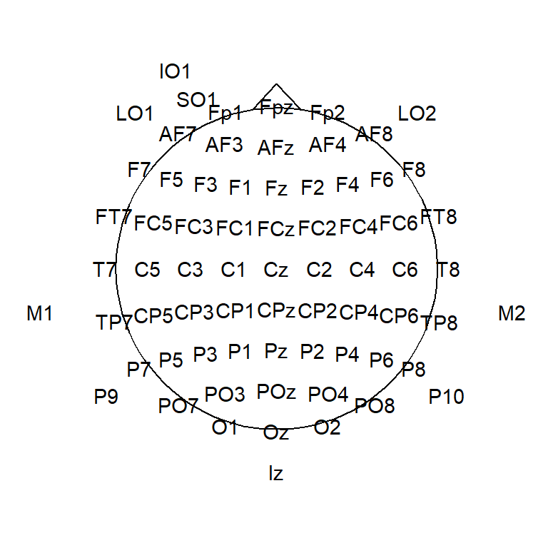
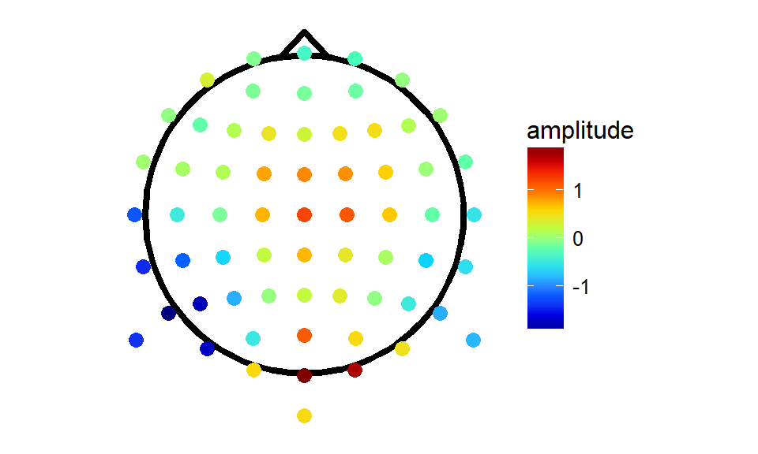
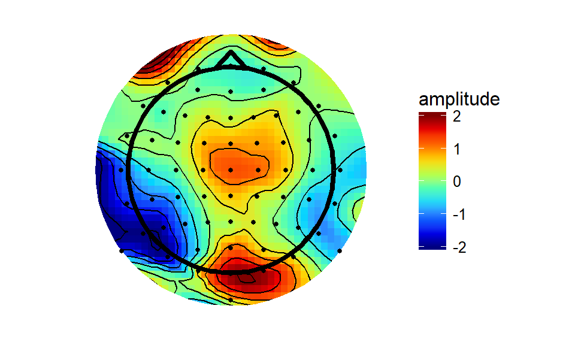
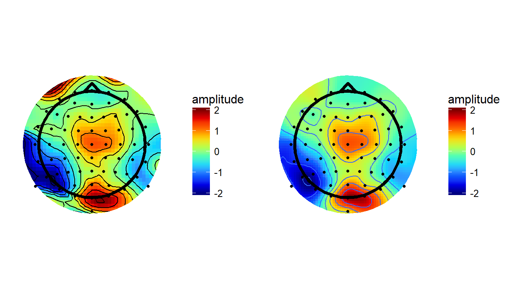
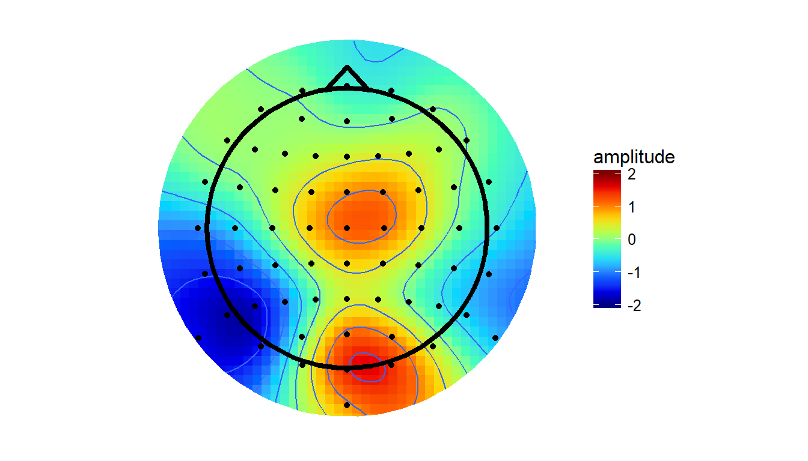

As well as ERPs or time-frequency plots from individual channels, it’s always useful to see topographical maps of our data. It’s a nice way to see what’s going on across the whole head, showing us whether effects are broadly or narrowly distributed across the whole scalp. So now I’m going to show you how to do topographical plots in R.
I want to first of all thank alexforrance and Harold Cavendish over on Stack Overflow for being the source of much of the code I’ve adapted here.
Here’s an example from Matlab’s EEGLAB package that I’ll try to reproduce. We’ve got a cartoon head, amplitude across the whole scalp and extrapolated slightly beyond, and a colour bar. It’s using the default Matlab colormap, ‘jet’.

To start off, as usual, we’ll load up some test data and some useful packages. I’ll be using the usual tidyverse packages, including ggplot2, and two other packages which will allow alternative approaches to producing the topographies: akima, and mgcv. I’ll also later use a custom function I adapted from Matlab.
library(tidyverse)
library(akima)
library(scales)
library(mgcv)
library(gridExtra)
library(png)
library(grid)topotest <- read_csv("https://raw.githubusercontent.com/craddm/ExploringERPs/master/topographyTest.csv") %>%
gather(electrode, amplitude, -Times)
topotest$amplitude <- as.double(topotest$amplitude)
electrodeLocs <- read_delim("https://raw.githubusercontent.com/craddm/ExploringERPs/master/biosemi70elecs.loc",
"\t",
escape_double = FALSE,
col_names = c("chanNo","theta","radius","electrode"),
trim_ws = TRUE)The data file is the amplitude at 64 scalp electrodes at timepoints from approximately -.2s before to .6s after stimulus onset. Each row is a timepoint, each column an electrodes, with a final, extra column indicating the actual time for each row. This is data from a single subject, but of course any suitable data can be used.
We load that in and convert it to long format - each row is now the amplitude from a single timepoint for a single electrode. We also need electrode locations. Let’s load in some I saved from EEGLAB. I simply saved them in .loc format, which is formatted as four columns - channel number, theta, radius, and label - with each row being one electrode.
The coordinates in EEGLAB’s loc files are in polar format. What we really want are Cartesian coordinates so we can plot the familiar topographical plots we’re so used to. That’s easy enough to do. We just need to conver the theta values from degrees to radians, then multiply the radius values by the sine and cosine of theta respectively for our x and y values.
electrodeLocs$radianTheta <- pi/180*electrodeLocs$theta
electrodeLocs <- electrodeLocs %>%
mutate(x = .$radius*sin(.$radianTheta),
y = .$radius*cos(.$radianTheta))
polar <- ggplot(electrodeLocs,
aes(radianTheta, radius, label = electrode))+
geom_text()+
theme_bw()+
coord_fixed(ratio = 6.75)
cartesian <- ggplot(electrodeLocs,
aes(x, y, label = electrode))+
geom_text()+
theme_bw()+
coord_equal()
grid.arrange(polar, cartesian, nrow = 2, ncol = 1)
As you can see, the polar co-ordinates don’t plot well, but our projected versions plot how we’d expect. Note that we could tell ggplot to interpret them as polar co-ordinates, but I found that doesn’t quite plot correctly. Note that this location file also includes locations for M1 and M2 and four ocular electrodes. They’ll disappear later as the data we loaded up doesn’t include these electrodes.
There are a couple more points of interest here. First is that I don’t want all the axes or background grids, so let’s create a custom theme that gets rid of the unwanted extras. In addition, I’d quite like a headshape there. We’ll make a function to draw a circle for a head, then a triangle for a nose, and add them to the plot.
theme_topo <- function(base_size = 12)
{
theme_bw(base_size = base_size) %+replace%
theme(
rect = element_blank(),
line = element_blank(),
axis.text = element_blank(),
axis.title = element_blank()
)
}
circleFun <- function(center = c(0,0),diameter = 1, npoints = 100) {
r = diameter / 2
tt <- seq(0,2*pi,length.out = npoints)
xx <- center[1] + r * cos(tt)
yy <- center[2] + r * sin(tt)
return(data.frame(x = xx, y = yy))
}
headShape <- circleFun(c(0, 0), round(max(electrodeLocs$x)), npoints = 100) # 0
nose <- data.frame(x = c(-0.075,0,.075),y=c(.495,.575,.495))
ggplot(headShape,aes(x,y))+
geom_path()+
geom_text(data = electrodeLocs,
aes(x, y, label = electrode))+
geom_line(data = nose,
aes(x, y, z = NULL))+
theme_topo()+
coord_equal()
So now we’ve got out electrode locations mapped into 2D space, and data for all timepoints, for all electrodes. What next? Let’s combine our data and electrode locations into a single data frame. To do that I call left_join to mash them together using electrode to match rows across the two data frames. This finds matching electrodes between the locations file and the data and combines them where possible, so, for example, the new file will have locations for all the electrodes in the data but won’t have rows for M1/M2 etc., since they’re not in the data. In this way you can use any location file at all that has matching electrode labels with those in your data.
allData <- topotest %>% left_join(electrodeLocs, by = "electrode")
allData## # A tibble: 52,416 x 9
## Times electrode amplitude chanNo theta radius radianTheta
## <dbl> <chr> <dbl> <int> <dbl> <dbl> <dbl>
## 1 -200.20 Fp1 0.77280 1 -17.926 0.51499 -0.3128677
## 2 -199.22 Fp1 0.70987 1 -17.926 0.51499 -0.3128677
## 3 -198.24 Fp1 0.65099 1 -17.926 0.51499 -0.3128677
## 4 -197.27 Fp1 0.63708 1 -17.926 0.51499 -0.3128677
## 5 -196.29 Fp1 0.60768 1 -17.926 0.51499 -0.3128677
## 6 -195.31 Fp1 0.38862 1 -17.926 0.51499 -0.3128677
## 7 -194.34 Fp1 0.26168 1 -17.926 0.51499 -0.3128677
## 8 -193.36 Fp1 0.29348 1 -17.926 0.51499 -0.3128677
## 9 -192.38 Fp1 0.26700 1 -17.926 0.51499 -0.3128677
## 10 -191.41 Fp1 0.22802 1 -17.926 0.51499 -0.3128677
## # ... with 52,406 more rows, and 2 more variables: x <dbl>, y <dbl>Ok, so now we’ve got our head and our electrode positions, let’s pick an arbitrary timepoint and plot our topographical map!
#Define Matlab-style Jet colourmap
jet.colors <- colorRampPalette(c("#00007F", "blue", "#007FFF", "cyan", "#7FFF7F", "yellow", "#FF7F00", "red", "#7F0000"))
#select a Timepoint
singleTimepoint <- filter(allData,Times == 170.90)
#Draw our map!
ggplot(headShape,aes(x,y))+
geom_path(size = 1.5)+
geom_point(data = singleTimepoint,aes(x,y,colour = amplitude),size = 3)+
scale_colour_gradientn(colours = jet.colors(10),guide = "colourbar",oob = squish)+ #note: oob = squish forces everything outside the colour limits to equal nearest colour boundary (i.e. below min colours = min colour)
geom_line(data = nose,aes(x, y, z = NULL),size = 1.5)+
theme_topo()+
coord_equal() It looks like somebody spilt a packet of Skittles. We missed a step! The electrodes are a sparse grid with lots of gaps in-between. To create those nice smooth maps we’re so used to seeing, we need to do some interpolation!
Interpolation
This is where akima comes in. Akima includes tools for interpolation of irregularly and regularly spaced grids using either linear or cubic splines. I’ll use Akima to a do cubic spline interpolation and extrapolate beyond the confines of the data specified by the electrodes, so we get the most comparable results to EEGLAB defaults. We pass to akima the original electrode locations and the amplitude of the EEG signal measured at each electrode. Then we pass it the a grid specifying the locations we want values for. For maximum comparability with Matlab, I’ll specify a 67 by 67 grid, but you can get finer interpolation using more points.
gridRes <- 67 # Specify the number of points for each grid dimension i.e. the resolution/smoothness of the interpolation
tmpTopo <- with(singleTimepoint,
interp(x = x, y = y, z = amplitude,
xo = seq(min(x)*2,
max(x)*2,
length = gridRes),
yo = seq(min(y)*2,
max(y)*2,
length = gridRes),
linear = FALSE,
extrap = TRUE)
)
interpTopo <- data.frame(x = tmpTopo$x, tmpTopo$z)
names(interpTopo)[1:length(tmpTopo$y)+1] <- tmpTopo$y
interpTopo <- gather(interpTopo,
key = y,
value = amplitude,
-x,
convert = TRUE)
interpTopo$incircle <- sqrt(interpTopo$x^2 + interpTopo$y^2) < .7 # mark grid elements that are outside of the plotting circle
interpTopo <- interpTopo[interpTopo$incircle,] #remove the elements outside the circle
maskRing <- circleFun(diameter = 1.42) #create a circle round the outside of the plotting area to mask the jagged edges of the interpolation
akimaPlot <- ggplot(interpTopo,
aes(x = x, y = y, fill = amplitude)
) +
geom_raster() +
stat_contour(aes(z = amplitude),
colour = "black",
binwidth = 0.5) +
theme_topo()+
scale_fill_gradientn(colours = jet.colors(10),
limits = c(-2,2),
guide = "colourbar",
oob = squish) +
geom_path(data = maskRing,
aes(x, y, z = NULL, fill =NULL),
colour = "white",
size = 6)+
geom_point(data = singleTimepoint,
aes(x, y),
size = 1)+
geom_path(data = headShape,
aes(x, y, z = NULL, fill = NULL),
size = 1.5)+
geom_path(data = nose,
aes(x, y, z = NULL, fill = NULL),
size = 1.5)+
coord_equal()
akimaPlot The akima interpolation is generally very close to the Matlab version, albeit a bit more raggedy round the edges - the interpolation breaks down outside of the convex hull of the electrodes quicker than does the interpolation through Matlab’s ‘v4’ method.
Speaking of Matlab’s v4, I decided to implement it here and see how it compares. I straight-up adapted the Matlab code from the griddata function. I won’t pretend I know exactly what it’s doing at every point, but apparently it’s a biharmonic spline interpolation method.
rmax <- .75 #specify a maximum boundary for the grid
gridRes <- 67 #specify the interpolation grid resolution
## Create a function to perform Matlab's v4 interpolation.
## Takes as input a data-frame with columns x, y, and z (x co-ordinates, y co-ordinates, and amplitude)
## and variables xo and yo, the co-ordinates which will be use to create a grid for interpolation
v4Interp <- function(df, xo, yo, rmax = .75, gridRes = 67) {
xo <- matrix(rep(xo,length(yo)),nrow = length(xo),ncol = length(yo))
yo <- t(matrix(rep(yo,length(xo)),nrow = length(yo),ncol = length(xo)))
xy <- df$x + df$y*sqrt(as.complex(-1))
d <- matrix(rep(xy,length(xy)),nrow = length(xy), ncol = length(xy))
d <- abs(d - t(d))
diag(d) <- 1
g <- (d^2) * (log(d)-1) # Green's function.
diag(g) <- 0
weights <- qr.solve(g,df$z)
xy <- t(xy)
outmat <- matrix(nrow = gridRes,ncol = gridRes)
for (i in 1:gridRes){
for (j in 1:gridRes) {
test4 <- abs((xo[i,j] + sqrt(as.complex(-1))*yo[i,j]) - xy)
g <- (test4^2) * (log(test4)-1)
outmat[i,j] <- g %*% weights
}
}
outDf <- data.frame(x = xo[,1],outmat)
names(outDf)[1:length(yo[1,])+1] <- yo[1,]
#return(list(x = xo[,1],y = yo[1,],z = outmat))
return(outDf)
}
## Create data frame to be used for interpolation - the function needs columns labelled x, y, and z
testDat<- data.frame(x = singleTimepoint$x,
y = singleTimepoint$y,
z = singleTimepoint$amplitude)
#Create the interpolation grid
xo <- seq(min(-rmax, testDat$x), max(rmax, testDat$x), length = gridRes)
yo <- seq(max(rmax, testDat$y), min(-rmax, testDat$y), length = gridRes)
interpV4 <- v4Interp(testDat, xo, yo)
interpV4 <- gather(interpV4,
key = y,
value = amplitude,
-x,
convert = TRUE)
interpV4$incircle <- (interpV4$x)^2 + (interpV4$y)^2 < 0.7 ^ 2 # mark
v4plot <- ggplot(interpV4[interpV4$incircle,],aes(x = x, y = y, fill = amplitude))+
geom_raster()+
stat_contour(aes(z = amplitude),binwidth = 0.5)+
theme_topo()+
geom_path(data = maskRing,
aes(x, y, z = NULL, fill =NULL),
colour = "white",
size = 6)+
scale_fill_gradientn(colours = jet.colors(10),
limits = c(-2,2),
guide = "colourbar",
oob = squish)+
geom_point(data = singleTimepoint,
aes(x,y),
size = 1)+
geom_path(data = headShape,
aes(x,y,z = NULL,fill = NULL),
size = 1.5)+
geom_path(data = nose,
aes(x, y, z = NULL, fill = NULL),
size = 1.5)+
coord_equal()
grid.arrange(akimaPlot, v4plot,nrow = 1,ncol = 2)
As you’d expect, using this method produces pretty much identical results here as it does in Matlab.
Fitting a data-driven smoothing spline
Finally, we can fit a Generalized Additive Model (GAM). GAMs allow non-linear smooths to be used as predictors of a response. When attempting to fit the smooth, GAMs try to find a good balance between smoothness and overfitting (which would produce too “spiky” a fit). Here, I fit a simple model which uses a thin plate spline to predict amplitude from the x and y coordinates of the data. Then we use the model to predict amplitude values across the whole scalp.
splineSmooth <- gam(amplitude ~ s(x, y, bs = 'ts'),
data = singleTimepoint)
GAMtopo <- data.frame(expand.grid(x = seq(min(singleTimepoint$x)*2,
max(singleTimepoint$x)*2,
length = gridRes),
y = seq(min(singleTimepoint$y)*2,
max(singleTimepoint$y)*2,
length = gridRes)))
GAMtopo$amplitude <- predict(splineSmooth,
GAMtopo,
type = "response")
GAMtopo$incircle <- (GAMtopo$x)^2 + (GAMtopo$y)^2 < .7^2 # mark
GAMplot <- ggplot(GAMtopo[GAMtopo$incircle,],
aes(x, y, fill = amplitude)) +
geom_raster()+
stat_contour(aes(z = amplitude),
binwidth = 0.5)+
theme_topo()+
scale_fill_gradientn(colours = jet.colors(10),
limits = c(-2,2),
guide = "colourbar",
oob = squish)+
geom_path(data = maskRing,
aes(x, y, z = NULL, fill =NULL),
colour = "white",
size = 6)+
geom_point(data = singleTimepoint,
aes(x,y,fill = NULL))+
geom_path(data = nose,
aes(x, y, z = NULL, fill = NULL),
size = 1.5)+
geom_path(data = headShape,
aes(x,y,z = NULL,fill = NULL),
size = 1.5)+
coord_quickmap()
GAMplot
Note that this approach is different to the others (v4/akima) in that they always force the surface to pass through the points with defined values. Thus, the value of the interpolated surface at each electrode will match the amplitude recorded at that electrode. The GAM method instead finds the simplest spline that will adequately capture the variations in amplitude across the surface. At times, the value of the surface at a given electrode may be higher or lower than the amplitude actually recorded at that electrode. From my initial testing, this method tends to smooth the topographies out a little, bringing both peaks and troughs a little closer to zero.